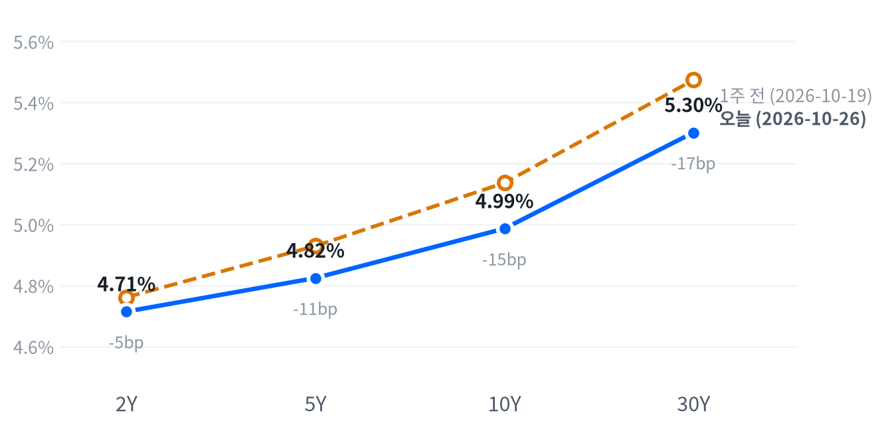

앤트로픽이 상장 신청서를 공개하자 반도체·광학·전력 설비주가 다시 올랐고, 기술 업종이 S&P을 끌어올렸다. 같은 날 알파벳 등 커뮤니케이션 서비스는 내려 AI에 돈을 쓰는 쪽과 받는 쪽의 주가가 갈렸다.
국채시장은 10월 28일 FOMC를 앞두고 2·5년물만 올랐다. 공급망 강세가 실제 설비투자 상향으로 이어지는지는 10월 28일 장 마감 뒤 마이크로소프트·알파벳 실적에서 확인한다.
앤트로픽의 상장 신청서 공개가 AI 공급망 주식을 다시 끌어올렸다. 신청서에 약 10년에 걸친 5,180억 달러 규모의 연산 약정이 담겼다는 보도가 나왔고, AI 인프라 다섯 종목(마벨·코히런트·루멘텀·GE 버노바·버티브)은 단순평균으로 S&P보다 4.12%p 강했다. 금리 충격이 없는 날이라 이 차이는 할인율이 아니라 수요 기대에서 나왔다.
우리는 이 반등을 돈이 확보된 연산 수요가 공급망의 매출 가시성으로 넘어간 결과로 본다. 지난주 메타가 AI 지출 전망을 다시 올린 뒤 주가가 실망을 줬다는 보도처럼, 최근 시장의 서술은 설비투자 상향이 보상받지 못한다는 쪽이었다. 그러나 그 반응이 나온 10월 22일에는 2년물 급락과 유가 급등이 겹쳐 수익성 의문만의 결과로 보기 어려웠다. 가장 강한 반론은 이날 강세가 상장 기대와 루멘텀에 대한 신규 매수 의견 같은 일회성 재료라는 것이다. 공급망 주가가 설비투자 상향을 얼마나 반영했는지 잰 값이 없어, 시장 기대와 우리 해석의 차이가 얼마인지는 알 수 없다.
이날 움직임은 반도체·AI 인프라 테마의 상대 강세를 뒷받침했다. 그러나 한 달 넘게 이어진 상대 약세가 하루 반등으로 끝났다고 보기는 이르다. 3개월 시계의 판단은 발주자가 지출 전망을 실제로 올린 뒤의 공급망 반응을 보고 내린다. 공급망 묶음과 S&P의 상대 성과가 가장 직접적인 표현 수단이지만, 종목마다 변동성이 크게 다르고 실적일 갭과 옵션 비용 자료가 없어 이날은 새 아이디어로 내지 않는다. 금융·유틸리티·부동산은 이날 방향이 엇갈려 금리 민감 테마의 판단은 FOMC 뒤로 미룬다.
확인은 10월 29일 정규장에서 한다. 마이크로소프트·알파벳 가운데 한 곳 이상이 설비투자 전망을 올리고 내린 곳이 없을 때, AI 인프라 다섯 종목 단순평균과 S&P의 일간 등락률 차이가 +2.84%p 이상이면 이 판단을 뒷받침한다. 같은 차이가 -2.84%p 이하이면 판단은 약해지고, 수익성·자금 조달 의문을 우선 설명으로 본다. 그 사이이거나, 두 회사 모두 전망을 올리지 않거나, 그날 네이버 2년물 종가가 5bp 이상 움직이거나, 다섯 종목 실적이나 코어위브·오라클의 신용 사건이 겹치면 결론을 내지 않는다. 그 전에 10월 28일 14:00(ET) FOMC가 있고, 29일 08:30(ET)에는 3분기 GDP와 9월 PCE가 나온다.
출처: Reuters, InvestmentNews, Yahoo Finance
| 지수 | 종가 | 등락 | 기준일 |
|---|---|---|---|
| 닛케이225 | 62,693.16 | -0.34% | 10월 23일 |
| 항셍 | 23,093.37 | +0.69% | 10월 23일 |
| 상해종합 | 3,690.48 | +0.89% | 10월 23일 |
| DAX | 25,181.65 | -0.75% | 10월 23일 |
| FTSE100 | 10,767.33 | +0.72% | 10월 26일 |
| 유로스톡스50 | 6,068.22 | -0.31% | 10월 23일 |
| VIX | 18.39 | -1.06p | 10월 26일 |
FTSE100과 VIX는 10월 26일 값이고, 나머지는 들어온 마지막 종가인 10월 23일 값이다. VIX 등락은 포인트다.
유럽은 미국과 엇갈렸다. 유럽 세 지수는 평균 0.11% 내렸는데, 지역 안에서도 갈려 26일 종가가 들어온 FTSE100만 올랐고 DAX와 유로스톡스50은 23일에 내렸다. 아시아 세 지수는 23일 종가로 평균 0.41% 올라 미국과 같은 방향이었지만, 닛케이만 내려 이곳도 지역 안에서 갈렸다.
야간 선물은 좁은 범위에서 오르내리다 개장 전에 힘을 받았다. 나스닥 선물(NQ)은 04:00(ET) 29,024가 저점이었고 08:00(ET) 29,354까지 올랐다. S&P 선물(ES)의 하루 범위는 0.6%에 그쳤다. 현물은 S&P +0.21%, 나스닥 +0.26%, 러셀2000 +0.16%의 갭으로 상승 출발했고, 개장 전부터 반도체주가 강했다는 보도가 나왔다.
세 지수 모두 하루 범위의 중간쯤에서 끝났다. 오전의 상승을 일부 반납했지만 저점권까지 밀리지는 않았다.
저점권·고점권 경계는 최근 2,253거래일의 일간 종가 위치 이력으로 다시 잰 기준이다.
AI 공급망이 업종 순서를 정한 날이다. 기술(+1.69%)과 산업재(+1.42%)가 가장 많이 올랐고, 커뮤니케이션 서비스(-1.57%)만 1% 넘게 내렸다. 성장주(+1.08%)가 가치주(+0.31%)를 크게 앞섰다. 시간외에서는 제트블루가 3분기 순손실이 커졌는데도 운임이 19% 올랐다는 실적에 약 11% 뛰었다는 보도가 나왔다.
출처: 파이낸셜뉴스, CNBC
| 지수 | 종가 | 등락률 |
|---|---|---|
| S&P500 성장주 | 137.95 | +1.08% |
| 나스닥 | 26,169.38 | +0.82% |
| S&P500 | 7,676.77 | +0.70% |
| 러셀2000 | 2,786.42 | +0.38% |
| S&P500 가치주 | 238.85 | +0.31% |
| 다우존스 | 52,361.58 | +0.28% |
| 섹터 | 등락률 |
|---|---|
| 기술 | +1.69% |
| 산업재 | +1.42% |
| 경기소비재 | +1.03% |
| 부동산 | +0.54% |
| 에너지 | +0.45% |
| 금융 | +0.21% |
| 소재 | +0.14% |
| 헬스케어 | 0.00% |
| 유틸리티 | -0.02% |
| 필수소비재 | -0.34% |
| 커뮤니케이션서비스 | -1.57% |
앤트로픽 신청서 보도에 기술주가 오르며 S&P은 0.70% 오른 7,677로 끝났다. 최근 2년(504거래일) 가운데 이보다 높았던 날이 37일뿐인 자리다. 나스닥은 0.82% 오른 26,169, 다우는 0.28% 오른 52,362, 러셀2000은 0.38% 오른 2,786이다. S&P은 평소 하루만큼 움직였고, 러셀2000은 평소의 절반에도 못 미쳤다.
상승은 오전에 다 나왔다. 세 지수 모두 개장 직후가 그날의 저점이었고, 나스닥은 11:00(ET) 무렵 시가보다 1.08% 높은 26,306까지 올랐다가 오후에 그 일부를 내줬다. 오후 반납을 설명하는 뉴스는 찾지 못했고, 되돌림 폭도 흐름을 뒤집을 크기는 아니었다.
지수 상승의 대부분은 기술 업종이 만들었다. 추정 기여도로 기술이 +0.57%p를 보탰고 경기소비재(+0.14%p)와 산업재(+0.09%p)가 뒤를 이었다. 커뮤니케이션 서비스는 -0.20%p로 상승폭을 가장 많이 깎았다. 업종 합으로 설명되지 않는 부분은 +0.08%p다.
추정 기여도는 업종 비중을 직접 받지 않아, 최근 252거래일 지수·업종 수익률로 추정한 비중을 곱한 값이다. 소재와 부동산은 비중을 추정할 수 없어 빠졌다.
이 상승은 넓게 퍼진 위험선호보다 AI 공급망에 몰린 매수로 본다. 기술 한 업종이 지수 상승의 대부분을 만들었고, 같은 AI 테마 안에서도 설비투자를 집행하는 알파벳은 내렸다. VIX가 1.06p 내린 18.39로 낮아졌지만 평소 수준으로 돌아온 정도라 경계가 풀렸다고 보기는 이르다.
| 만기 | 종가(10월 26일) | 전일比(bp) | 1주 전(10월 19일) | 주간 변화(bp) |
|---|---|---|---|---|
| 2Y | 4.714% | +3.2 | 4.761% | -4.7 |
| 5Y | 4.824% | +1.7 | 4.929% | -10.5 |
| 10Y | 4.986% | -0.2 | 5.136% | -15.0 |
| 30Y | 5.301% | -1.4 | 5.473% | -17.2 |
10월 28일 FOMC를 앞두고 2·5년물만 올랐다. 2년물은 3.2bp 오른 4.714%, 10년물은 거의 그대로인 4.986%, 30년물은 1.4bp 내린 5.301%로 끝났다. 10년물은 최근 2년(504거래일) 가운데 이보다 높았던 날이 25일뿐인 고점권에 머물러 있다.

네이버 국채 종가, 전 만기 10월 26일 기준. 1주 전(10월 19일)과 비교하면 2년물은 4.7bp, 30년물은 17.2bp 내려 장기물이 더 내린 불 플래트닝이다. 10년물 하루 변화는 평소 하루 변화폭의 0.04배로 거의 멈춰 있었다(야후 10년물 지수 기준).
하루로는 단기물이 오르고 장기물이 내려 커브가 평탄해졌다. 2s10s는 27.2bp로 10월 23일의 30.6bp에서 좁아졌고, 5s30s는 47.7bp다. 한 주 단위로는 전 만기 금리가 내린 가운데 장기물이 더 내린 불 플래트닝이 이어진다.
한 주 동안의 금리 하락은 실질금리가 이끌었다. 같은 날짜로 맞춘 FRED 기준 최신값(10월 23일)에서 10년물의 5거래일 하락 9bp 가운데 8bp가 실질금리 몫이었다. 23일 하루 반등 4bp는 실질금리와 기대인플레가 2bp씩 나눴다. 26일 10년 기대인플레는 2.34%로 변화가 없었고, 26일 실질금리는 아직 나오지 않아 이날 장기물 보합의 내역은 갈리지 않는다. 2년물 상승을 직접 설명하는 보도는 없었다. 유가가 내린 날이라 23일처럼 유가가 단기 금리를 밀어 올렸다고 보기는 어렵고, 시장은 연준 결정을 기다렸다는 보도가 나왔다.
회사채 시장은 조용했다. 하이일드 스프레드는 10월 23일 3.38%로 하루 2bp 좁아졌지만 5거래일로는 7bp 넓다. 투자등급 스프레드는 0.91%로 2bp 넓어졌다.
5년 뒤 5년 명목금리 5.18%, 실질 2.98%(10월 23일 기준). 기대인플레 쪽 수치와의 교차검증은 할 수 없었고, 위험 프리미엄이 섞인 값이다.
출처: BNN Bloomberg
| 통화쌍 | 종가 | 등락률 | 기준일 |
|---|---|---|---|
| DXY | 101.999 | +0.20% | 10월 26일 |
| USD/KRW | 1,325.89 | +0.13% | 10월 26일 |
| USD/JPY | 157.519 | +0.44% | 10월 26일 |
| EUR/USD | 1.1181 | -0.16% | 10월 26일 |
달러가 엔화에 가장 강했다. 엔/달러는 0.44% 오른 157.519엔으로, 뉴욕 오전 내내 올라 11:30(ET) 무렵 157.64엔에서 그날 고점을 찍었다. 달러지수는 0.20% 오른 101.999, 유로/달러는 0.16% 내린 1.1181이다. 원/달러는 1,326원으로 거의 움직이지 않았고, 최근 2년(504거래일) 가운데 이보다 낮았던 날이 3일뿐인 자리에 있다.
달러 강세는 금리차 쪽으로 설명된다고 본다. 주가가 오른 날이라 안전자산 수요가 달러를 밀었다고 보기 어렵고, 2년물 금리가 오른 것과 엔화가 가장 약했던 것이 같은 방향이다. 엔화 고유의 재료는 확인하지 못했다. 금리차가 달러를 움직였는지는 10월 28일 FOMC 뒤 2년물과 엔/달러가 같은 방향으로 가는지로 확인한다.
환율은 뉴욕 16:00 ET 가격, 전 거래일 같은 시각 대비다.
| 품목 | 종가 | 등락률 |
|---|---|---|
| WTI | $101.59 | -1.98% |
| Brent | $110.50 | -1.29% |
| 천연가스 | $3.046 | -0.16% |
| 금 | $4,027.00 | +0.34% |
중동 긴장 완화 움직임에 유가가 내렸다. WTI는 1.98% 내린 101.59달러로, 지난 23일 급등분의 절반쯤을 되돌렸다. 그래도 100달러 위의 높은 자리는 지켰다. 브렌트는 1.29% 내린 110.50달러다. 금은 0.34% 오른 4,027달러, 천연가스는 3.046달러로 거의 그대로였다.
사우디의 칼리드 빈 살만 국방장관이 테헤란에서 긴장 완화 회담을 했고, 카타르 중재단도 테헤란을 찾았다는 보도가 나왔다. WTI는 뉴욕 오전 10:30(ET) 100.33달러까지 밀렸다가 12:30(ET) 103.13달러까지 되올랐고, 이후 다시 내려 마감했다. 장중 반등은 후티 반군이 리야드 공항과 석유 펌프장을 공격했다고 주장한 소식과 겹칠 수 있지만, 사우디는 이를 확인하지 않았고 보도 시각도 확인하지 못했다. 미국 전략비축유가 1982년 이후 최저라는 보도도 나와, 공급 쪽 완충은 얇다.
브렌트가 WTI보다 덜 내려 두 유종의 가격 차는 8.91달러로 전일(8.30달러)보다 벌어졌다. 표의 WTI는 12월물, 브렌트는 1월물이라 가격 차에는 만기 차이도 들어 있다. 금은 달러가 오른 날에도 올랐다. 최근 몇 달 동안 금과 금리는 거의 따로 움직여, 실질금리로 금을 설명하기는 어렵다.
최근 60거래일 동안 열 개 자산의 움직임 가운데 가장 큰 공통 요인은 전체의 41.4%를 설명하고, 여전히 주식이 이끈다. 이 요인과 함께 움직이는 자산군은 직전 60거래일 구간의 금리에서 원자재로 바뀐 상태가 이어진다. 유가가 주식과 같은 공통 요인에 묶여 움직이는 구간이라는 뜻이다.
원자재·환율은 뉴욕 16:00 ET 가격, 전 거래일 같은 시각 대비다. 결제가와 다를 수 있다.
출처: CNBC, BNN Bloomberg
미국 경기 국면은 성장 보합·물가 교착인 교착을 10월 14일부터 9영업일째 유지한다. 이날은 새로 나온 확정 경제지표가 없어 국면이 움직일 수 없었고, 성장 점수 0.029와 물가 점수 -0.028도 어느 쪽으로 기울 만큼이 아니다. 국면은 10월 29일 PCE와 11월 6일 10월 고용에서 다시 점검한다.
| 지표 | Actual | Forecast | Previous | 발표일 | 컨센 대비 | 직전 대비 | 추세 |
|---|---|---|---|---|---|---|---|
| 신규 실업수당 청구 | 194,000 | — | 200,000 | 2026-10-22 (10월 17일 주간) | 개선 | 개선(미미) · 4주 평균 202K → 198K | |
| 신규 청구 4주 평균 | 197,750 | — | 198,750 | 2026-10-22 (10월 17일 주간) | 개선 | 개선(완만) · 4주 평균 205K → 199K | |
| 계속 실업수당 청구 | 1,728,000 | — | 1,703,000 | 2026-10-22 (10월 10일 주간) | 악화 | 개선(뚜렷) · 4주 평균 1,742K → 1,711K | |
| 비농업 고용 변화(9월) | +29K | — | +133K | 2026-09 기준월 | 악화 | 악화(미미) · 3개월 평균 +81K → +51K | |
| 실업률(9월) | 4.2% | — | 4.1% | 2026-09 기준월 | 악화 | 개선(미미) · 3개월 평균 4.27% → 4.13% | |
| 평균시간당임금 MoM(9월) | +0.13% | — | +0.32% | 2026-09 기준월 | 악화 | 악화(미미) · 3개월 평균 +0.21% → +0.19% | |
| 구인건수(8월) | 7,079K | — | 7,335K | 2026-08 기준월 | 악화 | 악화(미미) · 3개월 평균 7,336K → 7,199K |
| 지표 | Actual | Forecast | Previous | 발표일 | 컨센 대비 | 직전 대비 | 추세 |
|---|---|---|---|---|---|---|---|
| 산업생산 MoM(9월) | +0.66% | — | +0.06% | 2026-09 기준월 | 개선 | 보합 · 3개월 평균 +0.40% → +0.32% | |
| 내구재주문 MoM(8월) | -0.07% | — | +0.87% | 2026-08 기준월 | 악화 | 악화(완만) · 3개월 평균 +1.95% → +0.46% | |
| 신규주택판매(8월) | 684K | — | 643K | 2026-08 기준월 | 개선 | 개선(미미) · 3개월 평균 645K → 666K | |
| 기존주택판매(9월) | 399만 | — | 393만 | 2026-09 기준월 | 개선 | 악화(뚜렷) · 3개월 평균 4,120K → 3,993K | |
| 실질GDP QoQ 연율(2분기) | +2.2% | — | +2.5% | 2026년 2분기 기준 | 악화 | — | |
| S&P Global 제조업 PMI(10월 예비) | 56.0 | 55.5 | 55.9 | 2026-10-23 | 상회▲ | — | — |
| S&P Global 서비스업 PMI(10월 예비) | 57.9 | 58.0 | 58.8 | 2026-10-23 | 하회▼ | — | — |
| S&P Global 종합 PMI(10월 예비) | 57.6 | — | 58.4 | 2026-10-23 | — | — |
| 지표 | Actual | Forecast | Previous | 발표일 | 컨센 대비 | 직전 대비 | 추세 |
|---|---|---|---|---|---|---|---|
| 소매판매 MoM(9월) | +0.77% | — | +1.29% | 2026-09 기준월 | 악화 | 보합 · 3개월 평균 +0.61% → +0.55% | |
| 미시간대 소비자심리(9월 확정) | 48.1 | — | 51.7 | 2026-09 기준월 | 악화 | 개선(완만) · 3개월 평균 48.0 → 51.7 |
| 지표 | Actual | Forecast | Previous | 발표일 | 컨센 대비 | 직전 대비 | 추세 |
|---|---|---|---|---|---|---|---|
| CPI YoY(9월) | 3.72% | — | 3.35% | 2026-09 기준월 | 상승 | 둔화(미미) · 3개월 평균 3.80% → 3.46% | |
| CPI MoM(9월) | +0.65% | — | +0.40% | 2026-09 기준월 | 상승 | 재가속(완만) · 3개월 평균 +0.23% → +0.37% | |
| Core CPI YoY(9월) | 2.57% | — | 2.45% | 2026-09 기준월 | 상승 | 둔화(미미) · 3개월 평균 2.71% → 2.49% | |
| Core CPI MoM(9월) | +0.33% | — | +0.29% | 2026-09 기준월 | 상승 | 재가속(완만) · 3개월 평균 +0.19% → +0.28% | |
| PPI 최종수요 MoM(9월) | +1.34% | +0.6% | +0.47% | 2026-10-15 (9월분) | 상회▲ | 상승 | 재가속(완만) · 3개월 평균 +0.49% → +0.66% |
| PCE 물가 YoY(8월) | 3.42% | — | 3.36% | 2026-08 기준월 | 상승 | 둔화(미미) · 3개월 평균 3.59% → 3.41% | |
| Core PCE YoY(8월) | 3.01% | — | 2.98% | 2026-08 기준월 | 상승 | 둔화(미미) · 3개월 평균 3.12% → 3.01% | |
| 미시간대 1년 기대인플레(9월 확정) | 4.6% | — | 4.0% | 2026-09 기준월 | 상승 | 둔화(완만) · 3개월 평균 4.70% → 4.27% | |
| 미시간대 1년 기대인플레(10월 확정) | 4.7% | — | 4.6% | 2026-10-23 | — | — | |
| 미시간대 장기 기대인플레(10월 확정) | 3.5% | — | 3.4% | 2026-10-23 | — | — |
직전 대비는 Actual을 Previous와 비교한 것이고, 추세는 최근 3개월 평균을 그 앞 3개월 평균과 비교한 것입니다(주간 실업수당 청구는 4주 평균끼리). 추세의 세기는 그 지표가 평소 움직이는 폭에 견준 크기이고, 작은 변화는 보합으로 봅니다. 분기 지표인 GDP는 두 비교가 같은 숫자를 보므로 직전 대비만 싣습니다.
연준의 다음 금리 변경은 12월 9일 FOMC의 25bp 추가 인상이라는 판단을 유지한다. CME FedWatch 기준 10월 28일 인상 확률은 약 9~10%로 전해졌고, 12월 인상 확률은 10월 26일 보도마다 69.4%에서 84%까지 갈렸다. 로이터 설문에서는 이코노미스트 100명 가운데 94명이 10월 동결을, 100명 전원이 12월 인상을 예상했다. 같은 측정의 전일 값과 비교할 수 없어 시점 판단은 바꾸지 않는다.
10월 27일 FOMC 회의 전까지 CME FedWatch 10월 인상 확률이 장 마감 무렵 기준으로 과반에 올라서면 시점을 10월로 당긴다. 11월 6일 10월 고용에서 실업률이 3월 이후 범위(4.1~4.3%) 위로 올라서면 인상 우위 판단을 철회한다.
자산별 전달경로는 전일과 같다.
출처: Reuters, Kiplinger
| 지수 | 순위(5거래일 전) | 1개월 | 3개월 | SPY 대비 3개월 | 대비 변화 | 12-1 모멘텀 | 변동성 | 1일 VaR 95% | 베타 | 50/200일선 | 52주 고점 대비 |
|---|---|---|---|---|---|---|---|---|---|---|---|
| 에너지 XLE | 1(1) | +12.2% | +21.7% | +18.1%p | +4.2%p | +43.4% | 21.5% | 1.7% | -0.66 | 위/위 | 0.0% |
| 소프트웨어 IGV | 2(2) | +5.1% | +21.4% | +17.8%p | +5.1%p | -7.6% | 33.9% | 2.6% | 1.96 | 위/위 | -4.8% |
| 초대형주 Top 50 XLG | 4(6) | -2.5% | +5.2% | +1.6%p | +0.7%p | +11.5% | 12.6% | 0.9% | 1.17 | 아래/위 | -3.6% |
| 반도체·AI 하드웨어 SMH | 8(17) | -10.7% | +2.3% | -1.3%p | +7.5%p | +76.5% | 34.7% | 4.0% | 2.26 | 아래/위 | -19.0% |
| 경기소비재 XLY | 9(9) | +3.4% | +1.8% | -1.8%p | +1.1%p | -6.5% | 15.7% | 1.6% | 1.02 | 위/아래 | -7.7% |
| 모멘텀 팩터 MTUM | 11(15) | -7.5% | +1.0% | -2.6%p | +5.9%p | +26.8% | 22.4% | 2.6% | 1.44 | 아래/위 | -14.5% |
| 금융 XLF | 13(11) | +2.1% | -2.4% | -6.0%p | -1.8%p | +6.0% | 12.5% | 1.3% | 0.52 | 위/위 | -4.0% |
| 금속·광업 XME | 16(10) | -11.4% | -5.3% | -8.8%p | -6.0%p | +10.0% | 34.8% | 3.7% | 1.98 | 아래/아래 | -27.6% |
| 전력망 GRID | 17(18) | -9.2% | -5.3% | -8.9%p | -0.1%p | +16.9% | 23.1% | 2.7% | 1.49 | 아래/아래 | -17.9% |
| 소형주 IWM | 18(21) | -1.8% | -5.3% | -8.9%p | +2.1%p | +15.6% | 13.8% | 1.4% | 1.00 | 아래/아래 | -9.0% |
| 은행 KBE | 19(22) | +1.2% | -5.4% | -9.0%p | +2.4%p | +17.6% | 15.3% | 1.4% | 0.43 | 위/위 | -7.2% |
| 소형 성장 IWO | 21(24) | -3.4% | -6.3% | -9.9%p | +3.0%p | +10.6% | 17.8% | 2.0% | 1.35 | 아래/아래 | -12.0% |
| 산업재 XLI | 22(19) | -2.0% | -8.3% | -11.8%p | -2.7%p | +11.4% | 13.9% | 1.4% | 0.88 | 아래/아래 | -10.2% |
| 주택건설 XHB | 24(25) | -0.4% | -10.2% | -13.7%p | -0.4%p | -8.6% | 25.1% | 2.3% | 1.12 | 아래/아래 | -18.5% |
| 방산 ITA | 25(23) | -3.1% | -15.3% | -18.9%p | -6.8%p | -0.6% | 18.3% | 2.1% | 0.81 | 아래/아래 | -18.1% |
| 지수 | 순위(5거래일 전) | 1개월 | 3개월 | SPY 대비 3개월 | 대비 변화 | 12-1 모멘텀 | 변동성 | 1일 VaR 95% | 베타 | 50/200일선 | 52주 고점 대비 |
|---|---|---|---|---|---|---|---|---|---|---|---|
| 헬스케어 XLV | 3(3) | +5.0% | +7.6% | +4.0%p | -3.3%p | +18.8% | 17.1% | 1.4% | 0.13 | 위/위 | -1.1% |
| 배당 SCHD | 5(4) | +6.3% | +5.0% | +1.4%p | -1.1%p | +27.2% | 11.2% | 0.9% | 0.14 | 위/위 | -0.3% |
| 퀄리티 팩터 QUAL | 7(7) | 0.0% | +2.5% | -1.0%p | -1.8%p | +15.1% | 8.8% | 0.8% | 0.77 | 위/위 | -1.8% |
| 필수소비재 XLP | 10(5) | +7.2% | +1.7% | -1.9%p | -3.6%p | +6.2% | 15.5% | 1.4% | -0.15 | 위/위 | -2.3% |
| 저변동성 SPLV | 14(12) | +6.1% | -2.6% | -6.1%p | -1.2%p | +0.3% | 10.1% | 1.0% | 0.04 | 위/위 | -2.6% |
| 유틸리티 XLU | 20(20) | +7.7% | -5.8% | -9.4%p | +0.5%p | -10.0% | 15.6% | 1.4% | 0.13 | 위/아래 | -9.0% |
| 지수 | 순위(5거래일 전) | 1개월 | 3개월 | SPY 대비 3개월 | 대비 변화 | 12-1 모멘텀 | 변동성 | 1일 VaR 95% | 베타 | 50/200일선 | 52주 고점 대비 |
|---|---|---|---|---|---|---|---|---|---|---|---|
| 일본 EWJ | 6(8) | -3.7% | +5.0% | +1.4%p | +1.6%p | +24.2% | 16.0% | 1.3% | 1.12 | 아래/위 | -5.1% |
| 신흥국 EEM | 12(14) | -9.1% | -0.9% | -4.4%p | +1.4%p | +26.6% | 20.4% | 2.2% | 1.36 | 아래/아래 | -13.2% |
| 유럽 VGK | 15(13) | -2.4% | -2.8% | -6.3%p | -1.3%p | +12.5% | 11.2% | 1.2% | 0.69 | 아래/아래 | -6.9% |
| 중국 MCHI | 23(16) | -6.7% | -9.7% | -13.3%p | -4.8%p | -16.4% | 15.5% | 1.8% | 0.64 | 아래/아래 | -23.7% |
| 지수 | 순위(5거래일 전) | 1개월 | 3개월 | SPY 대비 3개월 | 대비 변화 | 12-1 모멘텀 | 변동성 | 1일 VaR 95% | 베타 | 50/200일선 | 52주 고점 대비 |
|---|---|---|---|---|---|---|---|---|---|---|---|
| S&P 500 SPY | – | -0.8% | +3.6% | 0.0%p | – | +16.1% | 10.3% | 0.8% | 1.00 | 아래/위 | -1.8% |
| S&P 500 동일가중 RSP | – | +2.9% | +0.2% | -3.4%p | – | +12.4% | 10.1% | 0.8% | 0.68 | 위/위 | -2.1% |
| 나스닥 100 QQQ | – | -4.3% | +5.5% | +2.0%p | – | +22.5% | 17.7% | 1.7% | 1.56 | 아래/위 | -6.2% |
가격 기준 시장 국면은 횡보이고, 10월 22일 강세에서 넘어온 뒤 3거래일째다. SPY는 765.37로 50일선(766.72) 바로 아래에서 끝났고 200일선(724.41)보다는 한참 위다. 52주 고점과의 거리는 1.76%로 단기 약세 조건과는 멀어, 이날 반등이 이어져 50일선을 되찾으면 강세로 돌아갈 여지가 있다.
반도체·AI 하드웨어 업종의 3개월 상대수익률이 한 주 사이 크게 개선됐다. 순위는 17위에서 8위로 올랐고, SPY 대비 3개월 상대수익률은 7.49%p 늘어난 -1.30%p다. 이날 앤트로픽 신청서 보도 뒤의 반도체 반등이 그 흐름을 키웠지만, 1개월 수익률은 여전히 -10.71%로 한 달 전의 급락을 다 메우지 못했다. 반대로 방산은 23위에서 최하위인 25위로 내려가 상대수익률이 6.76%p 줄어든 -18.90%p가 됐다. 금속·광업도 10위에서 16위로 밀려 상대수익률이 6.01%p 나빠진 -8.85%p다.
위험 지표는 엇갈린다. 하이일드 스프레드는 10월 23일까지 5거래일 사이 7bp 넓어졌지만, 10년 실질금리는 같은 기간 8bp 내렸다. VIX는 18.39로 높지도 낮지도 않은 수준이다. 순유동성은 4주 사이 조금 늘었지만 금융여건지수가 조금 조여져 유동성 방향은 중립이다.
엔비디아(+2.39%)는 반도체·AI 하드웨어 관련주의 반등에서 지수를 가장 많이 끌어올린 종목이었다. 앤트로픽의 상장 신청서가 AI 칩 수요 기대를 되살렸다는 보도가 나왔고, 필라델피아 반도체지수는 2.82% 올랐다.
테슬라(+5.21%)는 경기소비재 상승의 상당 부분을 혼자 만들었다. 바클레이스가 목표주가를 370달러에서 450달러로 올리고 투자의견을 상향했다는 보도가 나왔지만, 같은 내용을 다른 보도로는 확인하지 못했다.
애플(-1.10%)은 하드웨어 업종에서 지수를 가장 많이 끌어내린 종목이었다. 확인된 재료 없음.
알파벳(-1.06%)은 커뮤니케이션 서비스 약세를 키웠다. AI 공급망이 오른 날 설비투자를 집행하는 쪽은 내렸다. 10월 28일 장 마감 뒤 실적을 앞두고 있다. 확인된 재료 없음.
루멘텀(+8.19%)은 광학 부품주의 반등을 이끌어 AI 인프라 관련주의 상대 강세를 키웠다. StoneX가 매수 의견과 목표주가 1,200달러로 신규 분석을 시작한 것이 직접 재료였다는 보도가 나왔고, 코히런트(+5.83%)도 함께 올랐다. 루멘텀은 10월 8일 사상 최고가에서 아직 크게 떨어져 있다.
AI 인프라 다섯 종목은 이날 반등에도 최근 20거래일 동안 시장보다 12.67% 뒤처졌다. 그중 반도체 축이 -15.31%p, 성장−가치 축이 -3.89%p, 대형−소형 축이 -0.69%p를 설명하고, 세 축으로 설명되지 않는 몫은 +7.22%p다. 이 묶음의 한 달 약세는 반도체 업종 공통의 매도로 대부분 설명된다고 본다.
하루 초과수익의 20거래일 합이고, 세 축(성장−가치·대형−소형·반도체)의 몫은 최근 60거래일로 추정한 민감도를 곱한 값이다. 시장 베타는 3.187이다.
출처: 파이낸셜뉴스, 헤럴드경제, GuruFocus, FX Leaders, 24/7 Wall St, TheStreet
하이퍼스케일러의 설비투자 상향이 공급망 매출 가시성으로 넘어간다는 판단(10월 26일)의 출발점은 이날 AI 인프라 다섯 종목 단순평균과 S&P의 차이 +4.12%p다. 확인은 10월 29일 정규장 한 세션의 일간 등락률 차이로 한다. 마이크로소프트·알파벳 가운데 한 곳 이상이 설비투자 전망을 올리고 내린 곳이 없을 때, 그 차이가 +2.84%p 이상이면 판단을 뒷받침하고 -2.84%p 이하이면 판단은 약해진다. 그 사이이거나, 그날 네이버 2년물 종가가 5bp 이상 움직이거나, 다섯 종목 실적이나 코어위브·오라클의 신용 사건이 겹치거나, 종가가 없으면 결론을 내지 않는다. 기준폭은 최근 20세션 같은 차이의 하루 절댓값 평균이고, 종목 사이 변동성 차이와 아마존 실적 시점은 보정하지 않았다.
통신 3사 급락을 장기 가격결정력의 재평가로 본 판단(10월 9일)은 방향은 지지됐지만 메커니즘은 확인하지 못한 채 닫는다. 베라이즌은 10월 26일 3분기 발표에서 올해 조정 주당순이익 성장 전망을 7~7.5%로 올렸는데도 약 3.5% 내려 S&P보다 크게 약했다는 보도가 나왔다. 미리 정한 규칙대로 가이던스를 지킨 날 시장보다 약했으므로 방향은 지지다. 그러나 보도는 하락을 매출 미달과 단말기 매출 9% 감소로 설명했고, SpaceX를 원인으로 든 보도는 찾지 못했다. AT&T(+0.1%)와 T-모바일(-0.4%)도 같이 빠지지 않아, 분기 고유 재료가 같은 방향의 결과를 냈을 가능성이 크다. 실행한 포지션이 없어 성과는 잴 수 없다.
헬스케어 강세를 AI 관련주에서 빠진 자금의 반대편으로 본 판단(10월 20일)은 이날 첫 비교 세션을 얻었다. AI 인프라 다섯 종목이 S&P보다 1.5%p 이상 강한 세션이었고, 헬스케어는 0.00%로 S&P보다 0.70%p 약해 지지 기준(-0.5%p 이하) 쪽이다. 같은 날 필수소비재와 유틸리티도 시장보다 약해, 이 결과가 AI에서 빠진 자금의 반대편이라는 경로를 직접 보여 주지는 않는다. 결론은 10월 27일 16:00(ET) 종가까지의 비교 세션 평균으로 낸다.
2년물 하락의 주된 부분을 12월 인상 경로의 재가격으로 본 판단(10월 22일)은 이날 지지 기준을 벗어났다. 2년물은 4.714%로 10월 22일 하락폭의 37.7%를 되돌려 지지 기준(4.698% 이하) 밖에 있고, 약화 기준(4.736% 이상)까지는 2.2bp 남았다. 주가 회복이라는 전제도 아직 충족되지 않아, 나스닥은 미리 정한 기준보다 2.00% 낮다. 유가가 내린 날이라 이번 반등을 유가 탓으로 돌리기도 어렵다. 결론은 10월 27일 17:05(ET) 네이버 종가로 낸다.
연준이 10월 28일 동결하면서도 12월 인상 여지를 닫지 않아 2년물이 오른다는 판단(10월 23일)은 아직 확인 구간 전이다. 10월 28일 네이버 2년물 종가가 10월 27일 종가보다 5bp 이상 오르면 판단이 지지되고, 같은 폭 이상 내리면 약해진다. 그 사이이거나, 연준이 실제로 인상하거나, 그날 WTI가 5% 이상 움직이거나, 두 날 종가가 없으면 결론을 내지 않는다.
단기물이 12월 인상을 반영해 커브가 평탄해졌다는 판단(10월 21일)은 금리차로는 기준 안쪽에 더 들어왔다. 2s10s는 27.2bp로 지지 기준(32.3bp 이하) 안에 있다. 그러나 12월 인상 확률이 보도마다 69.4~84%로 갈려 80% 이상이라는 전제를 같은 측정으로 확인하지 못했다. 10월 28일 FOMC 당일 같은 출처로 다시 확인한다.
신용·수익성 우려가 AI 인프라 급락을 이끌었다고 본 판단(10월 14일)은 이날도 비교에 들지 않았다. 2년물이 크게 오른 세션만 재기로 했는데, 이날 상승폭은 그 기준에 못 미쳤다. 확인 구간은 10월 27일 16:00(ET) 종가까지다.
연준 인상 사이클과 AI 자본지출 랠리가 따로 간다는 판단(9월 22일)은 결론을 계속 보류한다. 확인하려면 실질금리가 오르고 금리 민감 업종이 약한 날이 필요한데, 26일 실질금리는 아직 나오지 않았고 금융·유틸리티·부동산은 엇갈렸다. 기한은 10월 28일 14:00(ET) FOMC다.
출처: Yahoo Finance, Investing.com, 24/7 Wall St
시세는 Yahoo Finance와 네이버 국채 종가, 경제지표는 FRED와 각 발표 기관(BLS·BEA·Census 등), 그 밖의 내용은 본문에 밝힌 출처에서 가져왔다. 이 보고서는 투자 자문이 아니며 특정 자산의 매수·매도를 권유하지 않는다. 투자 판단과 그 결과에 대한 책임은 전적으로 투자자 본인에게 있다.